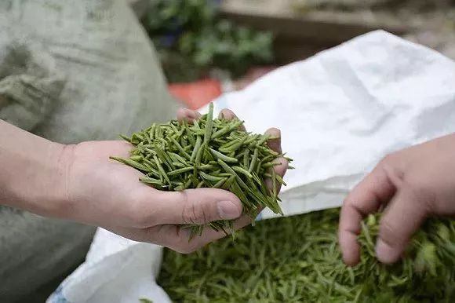
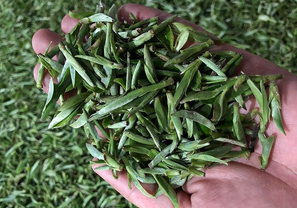
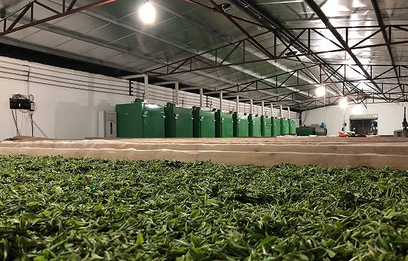

“封城”后，买菜成了一种冒险 | 我的武汉日志
原文链接 备份链接 若干年后回望，这一定是一段值得铭记的日子。因为新型冠状病毒感染的肺炎疫情，许多家庭无法团圆。疫情数据地图的每次刷新都令人揪心。我们和千万武汉人在一起，这不只是一句安慰，因为没有人能够置身事外。 之前，我们向用户征集这段 …

记者：吴容 编辑：牙韩翔
“
春茶在全年茶叶消费中占比超过一半，从全国几大茶叶主产区来看，预计今年茶农们损失将达20%-30%。
”
廖雨霖怎么也没料到今年的开春会是这样。他是福建尤溪县的茶农，通过合作社模式拥有近千亩茶田。
尤溪地处福建腹地，介于戴云山脉与武夷山脉之间，是福建为数不多优质茶区，茶叶适生区域达到20万亩，拥有梅赞、福云6号以及小菜茶等茶树良种。
过去，这里产出的茶叶在市场上大受欢迎，因为它是元宵后华东第一批上市的绿茶，人称“华东第一绿”。
而今年元宵过后，廖雨霖只能看着茶田里茶芽集中萌发、自由生长，却不知道该怎么办。新型冠状病毒肺炎疫情让茶农们本该忙碌的时节变得清闲起来。

尤溪绿茶有“华东第一绿”的美称。
“现在都没办法开展春茶的采摘，即便摘下来也没人要，茶商们基本都按兵不动，不来收购。”廖雨霖对界面新闻说，“而且加上疫情之下村镇封路，他们想来也进不来。”
在中国，人们向来喜欢喝春茶。每年2月中旬，是江浙、福建及贵州等地春茶的上新期，经过数月休养和春雨滋润，此时采摘的茶叶芽质颇佳，口感最为甘醇鲜爽。
茶农们通常分成两类，散户一般只负责种植和采摘，像廖雨霖这样开展茶园、合作社模式大农户，除了自己种植外，也收购散户的新茶进行加工，再卖给各路茶商、茶企等，通过零售环节到达消费者手里。

去年2月，福建尤溪县，茶工们在茶田上工作。
参照去年，尤溪当地春茶茶青的收购价格是70元一斤。在疫情爆发后，由于“无人问津”，如今陷入了无法定价的局面，“市场没有人在消化（春茶），定价多少钱好呢？高一点还是低一点都很尴尬。”廖雨霖说。
尤溪县散户居多，以家庭作坊模式为主，用的也是各家各户的几十亩田地，一般年收入约为100万元，由于茶叶的滞销今年损失大概达到20万-30万元。大农户抗风险能力好些，廖雨霖的损失可能在10%左右。
“春茶时期错过就错过了，没办法说损失后面的季度或下半年补回来的。”廖雨霖估计，全县资金亏损达到几千万元。

茶工们在茶田中忙碌。
“事实上，如果春茶无法开采，还可能面临倒春寒，而这对茶芽来说又是伤害。”广东省茶叶流通协会会长李勇刚对界面新闻说。眼下，广东粤北地区的春茶也即将迎来开采，以韶关的英德红茶为例，一般在在3月上新，如今也面临着采茶滞后的局面。
根据李勇刚提供的数据，春茶在全年茶叶消费中一般能占到50%左右的比例，从全国几大茶叶主产区来看，预计茶农们损失达20%-30%。
根据中商产业研究院的数据，2013年，我国茶叶产量仅192.4万吨，随着茶种植面积扩大，到2017年产量增至260.9万吨。2019年，这个数字增至265万吨左右。
而茶叶讲求精挑细选，是一个重人力成本的事情。
“五万个茶叶芽头才能制作成一斤茶，可想而知人工有多大。我们不得不聘请一些本地茶工，意味着要付出更多的人力成本。”陈俊杰是西湖龙井一位茶园的负责人，他正陷入到这样的困境中。
作为名优绿茶主产区的浙江，西湖龙井和苏州碧螺春知名度较高。去年暖冬让今年清明前茶量大增，在杭州西湖龙井，拥有几百亩地的大茶园每逢开采期，都依赖大量茶工进行采茶，眼下遭遇采茶工返工困难，即便抵杭需要隔离14天。

五万个茶芽才可制作成一斤茶，开采人力成本颇高。
外地茶工一般来自江西、安徽等地，以往薪酬为每天150-200元，目前已上涨20%-30%，本地茶工的要价也基本在每天200元以上。
“今年茶叶肯定是没那么快能销售出去，所以需要花点心思。这些也都是没办法中的办法了。”陈俊杰说。他计划今年采取精加工模式，同时做好保鲜措施，比如把茶叶放在冷库、冰箱中用密封真空包装来保管，以便放置时间更长，为了卖个更高的价格。此外，还会轻装上阵，不像过去那样盲目地压货存货。
和水果蔬菜的农户一样，茶农们希望借助网络尽可能地带来一些销售。
“以前一到采摘期，顺丰、京东等快递和电商平台都会茶区设点大规模收购，现在基本没有了，因为疫情人群不能聚集。”在同乡的帮助下，四川峨眉茶区茶农林辉正在慢慢摸索线上的路子，借助朋友圈和小程序来宣传卖货，自己联系快递物流上门，但快递复工并不多，路上也遇到过停运。

正在晾晒的茶叶。
林辉不指望能挣多少钱，摘下来的茶叶哪怕赔钱也要卖出去，“多少填补一点（损失），在家囤久了看着更焦心。”
作为茶行业链条之中底层环节，茶农是目前最直接“受伤”的一环，李勇刚觉得，更现实的问题在后头。
茶行业仍处于较为低端的发展模式，摘茶、炒茶和制茶多为手工，机械化程度低导致人力成本高。
“今年采茶增加的人工成本摊到了本就不多的春茶上，这部分溢价从茶农转嫁到流通环节的一个个茶商上（包括产地批发商、销地批发商、加工企业、零售企业等），大概溢价20%-30%，最后到达消费者手里的春茶价格可能比往年贵40%左右。”
李勇刚认为，溢价的承担者包括茶商和消费者，这也就是为什么说，疫情结束后的销售期，茶行业将迎来最严峻的时期。
（文内图片由受访者提供；应受访者要求“陈俊杰”“林辉”为化名）
未经授权 禁止转载

原文链接 备份链接 若干年后回望，这一定是一段值得铭记的日子。因为新型冠状病毒感染的肺炎疫情，许多家庭无法团圆。疫情数据地图的每次刷新都令人揪心。我们和千万武汉人在一起，这不只是一句安慰，因为没有人能够置身事外。 之前，我们向用户征集这段 …
原文链接 备份链接 口述者 新余市渝水区委常委、宣传部部长何智勇 整理：胡光华 张青青 我和文峰、陈山两位同志经过再三考虑，决定顶住压力，从2月3日晚上9点开始对绿景水岸小区实行全封闭式管理。春龙社区绿景水岸小区是新余市疑似“超级传播者” …
原文链接 备份链接 _ _ _ _ 导语: 武汉疫情发生后，牵动人心。它是中国自SARS以来最严重的公共卫生事件，也是我们这代人不可遗忘的记忆。疫情期间，微思客将开启“疫情”专题，诚邀各位专家及读者来稿，我们会定期更新优质稿件，这些记录都 …
原文链接 备份链接 原本打算在春节期间大有作为的餐饮业，被疫情来了一次“精确打击”。在现金流高度紧张的情况下，很多停摆企业仅能维持2-3个月。在一些从业者看来，真正的挑战在复工之后，疫情可能会带来餐饮业的一次洗牌。 记者 | …
原文链接 备份链接 文 | 王丹妮 编辑 | 林鹏 话筒从车上一直跟到了钟南山的会议现场，镜头摇摇晃晃，他一路上都在讲话。这是2月3日央视对疫情最新进展的采访，工作人员拦了几次，最终都没能把记者拦下。 这个春节，民众想从这位84岁院士口中 …